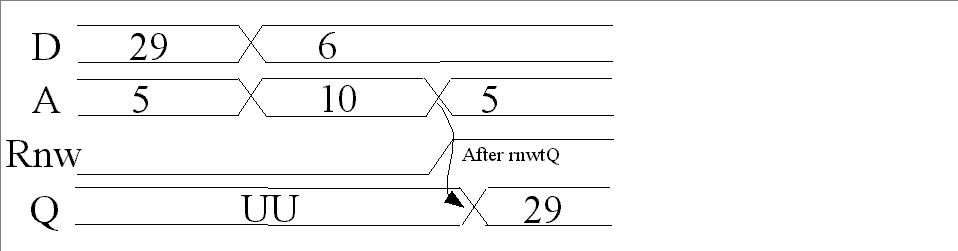
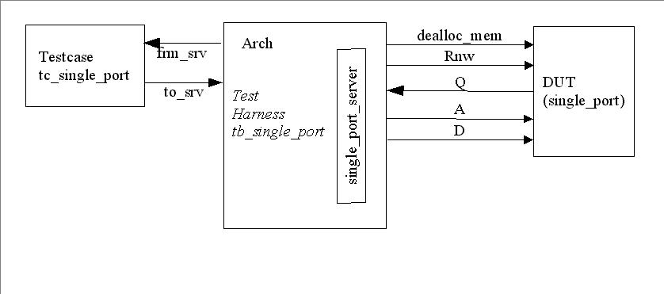

A VHDL simulation model for an asynchronous single port
memory is described. The memory is implemented as three different architectures,
a simple one and 2 ones which are optimized for efficient use of simulator
memory. Data and address buses are unconstrained, so multiple instances with
different address and data bus widths can be implemented in one single design.
A testbench is also provided.
|
Port Name |
Type |
Description |
|---|---|---|
|
rnwtQ |
Time |
Time delay from rnw = read until data appears on q data bus. |
|
d |
STD_LOGIC_VECTOR |
Input data bus, unconstrained |
|
q |
STD_LOGIC_VECTOR |
Output data bus, unconstrained |
|
a |
STD_LOGIC_VECTOR |
Address bus, unconstrained |
|
rnw |
STD_LOGIC |
Read not write port |
|
dealloc_mem |
BOOLEAN |
When set to true, deallocate linked list memory. |
The first architecture is called ArrayMemNoFlag, and implements
the memory core as an array of STD_LOGIC_VECTOR. This is the simplest architecture.
It is provided for comparison with the models below but not recommended for
use in your design.
The second architecture is called ArrayMem, and implements
the memory core as an array of BIT_VECTOR. This arrangement allows less workstation
memory to be used than the ArrayMemNoFlag architecture. Use this architecture
if most addresses in the simulated memory are written at least once.
The single port memory is asynchronous and is triggered
on any change of d, a or rnw. When rnw is cleared to '0', the write occurs
at the same time as rnw'transaction. When a read occurs, with rnw = '1' ,
data appears on the Q bus rnwtQ ns after rnw is set to '1'. The below sample
timing diagram illustrates both a read and write operation.

The test bench is arranged as a client server architecture as specified
by Bergeron1. A diagram illustrating the testbench
is given below.

Two tests are specified in tc_single_port component. The first test writes
data to two logical memory pages, and then reads them back verifying the correct
data. The test case writes an error message to the console for every miscompare.
The second case verifies that the single_port memory model outputs unknowns
to the q bus if a read occurs for an unwritten memory location. Six configurations
are specified in the test bench architecture tb_single_port, running both
tests for each single_port architecture.
A Makefile is used to compile and run all of the tests in a Unix or like environment, such as Cygwin. The compilation and simulation is targetted to the SymphonyEDA tool available at www.symphonyeda.com.
The source files and Makefile are located in {top}/VHDL
To compile: make com
To simulate all of the tests: make sim
To clean the compiled library: make clean
The tests are labeled :
To simulate any of these tests, type make {testname}
Please contact Robert Paley at rpaley_yid@opencores.org or Michael Geng at vhdl@michaelgeng.de if you have any questions or comments.
1Writing Testbenches , Functional Verification of HDL Testbenches. Chapter 6 – ISBN 0-7923-7766-4